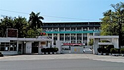
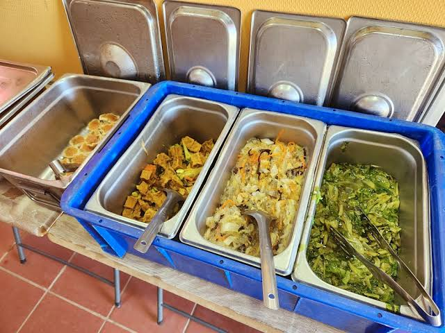

依照題目練習 Style ：
加上顏色（color: ___; background-color: ___;）
加上字體大小與樣式（font-size, font-family, text-align）
用 <b>, <i>, <u>, <mark> 做格式化
填寫  的 src, alt, width
這樣可以一次練習：
HTML Formatting（粗體、斜體、底線、標記）
HTML Comments（提示放在 <!-- --> 中）
HTML Colors（文字顏色與背景顏色）
HTML Styles（字體、大小、對齊、背景）
HTML Images（插入圖片）


<html>
<head>
    <meta charset="UTF-8">
    <title>我的旅遊日記</title>
</head>
<body style="background-color:powderblue ;"> <!-- 請填入背景顏色 -->

    <!-- 旅遊日記標題 -->
    <h1 style="color:blue ; text-align:center ;">我的旅遊日記</h1> <!-- 請填入標題顏色與對齊方式 -->

    <!-- 日期與地點 -->
    <p style="color: blue; font-size:50px ;">2026年9月23日 · 高雄高工</p> <!-- 請填入日期、地點、字體顏色、大小 -->

    <!-- 旅遊描述 -->
    <p>
        今天我和朋友去了 <b>高雄高工</b>，那是一棟 <i>實習大樓</i>！
    </p> <!-- 請填入地點與形容詞 -->

    <!-- 加入旅遊照片 -->
     <!-- 請填入圖片網址與寬度 -->

    <!-- 美食體驗 -->
    <p style="color: blue;">
        我們還吃了 <u>營養午餐</u> 和 <mark>水果</mark>，真是太好吃了！
    </p> <!-- 請填入食物名稱與字體顏色 -->

    <!-- 加入美食圖片 -->
     <!-- 請填入圖片網址與寬度 -->

    <!-- 小提醒 -->
    <p style="color:blue ; background-color:powderblue ;">
        記得一定要 吃飯！
    </p> <!-- 請填入提醒內容、文字顏色與背景顏色 -->

    <!-- 相片說明 -->
    <p style="font-family:courier ; font-size:50px ; color:blue ;">
        這是我在 <b>輕軌站</b> 拍的照片，景色超美！
    </p> <!-- 請填入字體、大小、顏色與地點 -->

    <!-- 加入景色照片 -->
     <!-- 請填入圖片網址與寬度 -->

</body>
</html>


把空格填上用html程式碼